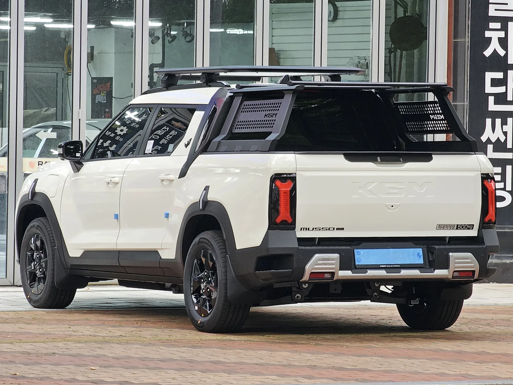
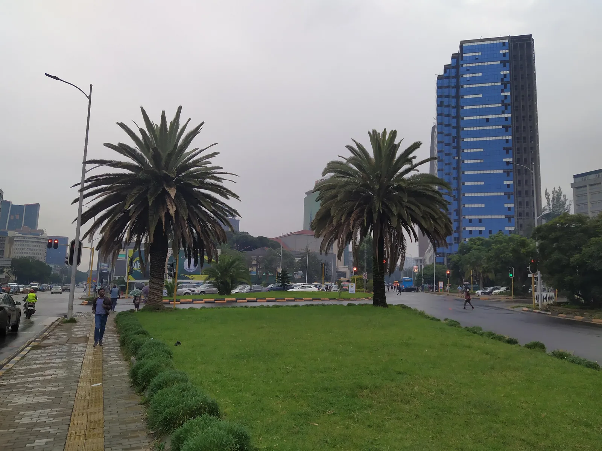
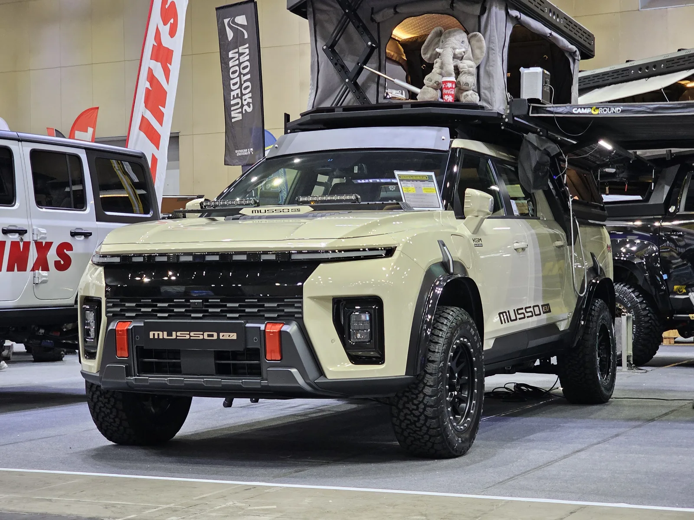

▲ 에티오피아 현지 생산 라인에 오를 KGM 토레스 EVX ⓒ Wikimedia Commons
KGM(케이지엠, 옛 쌍용자동차)이 아프리카 대륙에 처음으로 생산 거점을 세운다. 그것도 한국 자동차 업계에 낯선 나라, 에티오피아다. 2026년 9월 22일 서울 중구 KG타워에서 현지 파트너들과 KD(반조립) 생산 협약을 맺으면서다.
얼핏 보면 생소한 결정이지만 들여다보면 계산이 선다. 에티오피아는 2024년 1월부터 내연기관 자동차 수입을 아예 금지한 나라다. 완성차든 부품이든 엔진이 달린 차는 발을 붙일 수 없는 시장에서, KGM은 전기차 두 모델을 앞세워 동아프리카 전체를 겨냥한 생산기지를 짓기로 했다.
1. 무엇을 합의했나 — 3자 협약의 구조
이번 협약은 KGM 한 회사만의 결정이 아니라 역할이 나뉜 3자 구조다. KGM이 차량과 기술을 대고, 현지 파트너와 국내 엔지니어링사가 각각 부지·설비를 맡는 방식이다.
| 참여사 | 역할 |
|---|---|
| KGM | 토레스 EVX·무쏘 EV 등 KD 부품 공급, 브랜드·기술 이전 |
| 에티오피아 B&C 매뉴팩처링 그룹 | 현지 공장 부지 확보, 생산시설 건설·운영 |
| 영산글로넷 | 공장 설계, 기술 컨설팅, 생산설비 공급(한국 엔지니어링사) |
일정도 구체적이다. 2026년 10월 착공해 2027년 상반기부터 연간 약 1,000대 규모로 양산에 들어간다는 계획이다. 첫해 물량 자체는 크지 않지만, 동아프리카 지역에 한국산 브랜드의 조립 생산 거점이 세워지는 것 자체가 상징적이다.

▲ 국내 최초의 전기 픽업트럭 무쏘 EV도 에티오피아 현지 생산 라인에 포함된다 ⓒ Wikimedia Commons
2. KD 생산방식이란 — 왜 완성차를 그대로 안 보내나
KD는 'Knock Down'의 줄임말로, 완성차를 부품·반조립 상태로 분해해 수출한 뒤 현지 공장에서 최종 조립하는 방식이다. 부품 단위로 완전히 나눠 보내는 방식을 CKD(Complete Knock Down), 일부는 조립된 채로 나머지만 분해해 보내는 방식을 SKD(Semi Knock Down)라고 구분한다.
📍 완성차 대신 부품을 보내는 이유
대부분의 신흥시장은 완성차 수입 관세가 부품 관세보다 훨씬 높다. 부품 상태로 수출해 현지에서 조립하면 관세 부담을 크게 줄일 수 있고, 동시에 현지 고용 창출·기술 이전 효과도 낼 수 있어 진출국 정부가 선호하는 방식이다. 완성차 업체 입장에서도 초기 투자 부담이 적어 신흥시장 진입 장벽을 낮추는 수단으로 활용된다.
KGM은 이미 이 방식을 여러 나라에서 확대 적용하고 있다. 베트남 KD 공장은 2024년부터 티볼리·코란도·토레스 등을 생산해왔고 연간 생산량을 1만5,000대 규모까지 늘려가는 중이며, 사우디아라비아 CKD 공장(연 3만 대 규모)은 부품 조달 리스크 등으로 가동 시점이 당초 계획보다 늦춰지며 2026년 하반기 들어 본격화하는 단계다. 황기영 KGM 대표이사는 협약식에서 "연내 사우디아라비아와 베트남에서도 KD 사업을 지속 확대할 예정"이라고 밝혔다. 에티오피아는 이 KD 확장 전략의 세 번째 축인 셈이다.
3. 왜 하필 에티오피아인가 — 내연기관을 원천 봉쇄한 시장
에티오피아는 완성차 업계에서 이례적인 정책을 가진 나라다. 2024년 1월, 정부는 내연기관 자동차의 수입을 전면 금지했다. 여기서 그치지 않고 2025년 5월에는 내연기관차 부품 수입까지 막아, 현지에서 엔진 차량을 조립하는 것조차 사실상 불가능해졌다.
📍 환경 정책이자 외화 절약 정책
에티오피아 정부가 내세운 명분은 유럽연합(EU)과 비슷한 환경·기후 대응이지만, 속내는 조금 더 현실적이다. 정부는 "매년 가솔린·디젤 연료 수입에 45억 달러 이상을 지출하고 있으며, 이 외화 지출을 줄여 다른 국가 발전 우선순위에 투자해야 한다"고 설명한다. 산유국이 아닌 에티오피아 입장에서 연료 수입은 만성적인 외화 부담이었고, 전기차 전환은 사실상 경제 정책에 가깝다.
바로 이 지점이 KGM에게는 기회다. 내연기관차가 원천 차단된 시장에서는 일본·독일계 완성차 업체들이 오랫동안 지켜온 기득권 구도가 무의미해진다. 전기차만 놓고 새롭게 경쟁이 시작되는 시장인 셈이다.

▲ 에티오피아 수도 아디스아바바 시내 — 인구 1억이 넘는 동아프리카 최대 경제권의 중심지다 ⓒ Wikimedia Commons
에티오피아의 전기차 전환 정책에 대한 자세한 배경은 아래에서 확인할 수 있다. 에티오피아 전기차 정책 기사 바로가기
4. 동아프리카 시장의 경쟁 구도 — 중국이 먼저 들어와 있다
동아프리카가 완전히 빈 시장인 것은 아니다. 중국계 부품·배터리를 활용하는 현지 업체들은 이미 몇 년 전부터 전기 이륜차·소형 전기차를 앞세워 이 지역에 진출해 있다. 르완다의 앰퍼샌드(Ampersand)나 스피로(Spiro) 등이 대표적으로, 스피로는 연간 5만 대 규모의 전기 오토바이 생산 능력을 갖추고 동아프리카 전역으로 사업을 넓히는 중이다. 우간다·케냐에서는 전기 오토바이가 이미 전체 이륜차 판매의 15~20%를 차지할 정도로 저변이 넓어졌다.
✅ 동아프리카 전기차 시장, 알아둘 점
· 중국계는 전기 이륜차·초소형 모빌리티 중심으로 대중 시장 저변을 넓혀온 상태
· KGM은 중형 SUV·픽업트럭이라는 상대적으로 상위 세그먼트에서 승부
· 케냐·우간다·르완다는 이미 전기 모빌리티 인프라(충전소·정책)를 갖춰가는 중
· 에티오피아를 거점 삼는 이유는 내연기관 규제로 경쟁 구도 자체가 재편됐기 때문
즉 KGM의 승부수는 저가 이륜차 시장이 아니라, 아직 뚜렷한 강자가 없는 전기 SUV·픽업 세그먼트를 선점하겠다는 쪽에 가깝다. 토레스 EVX와 무쏘 EV 모두 오프로드 대응력과 적재 성능을 갖춘 실용 차종이라는 점도, 도로 사정이 고르지 않은 동아프리카 지역 특성과 맞아떨어진다.
5. KGM 신흥시장 전략의 큰 그림 — 파라과이에서 에티오피아까지
에티오피아 진출은 갑자기 튀어나온 결정이 아니다. KGM은 올해 들어 신흥시장을 향한 행보를 눈에 띄게 늘려왔다.
| 시기 | 내용 |
|---|---|
| 2024년~ | 베트남 KD 공장 가동(연 1만5,000대 규모까지 확대 중) |
| 2026년 하반기 | 사우디아라비아 CKD 공장(연 3만대 규모) 가동 본격화(당초 상반기서 연기) |
| 2026년 9월 | 파라과이 ODA 사업으로 무쏘 EV 20대 공공부문 공급 |
| 2026년 9월 | 에티오피아 KD 협약 체결, 동아프리카 진출 발표 |
| 2026년 내 | 사우디아라비아·베트남 KD 사업 추가 확대 예정(황기영 대표 발언) |

▲ 오프로드 대응력을 강조한 무쏘 EV 컨버전 모델 — 험로 대응력은 신흥시장 공략의 무기이기도 하다 ⓒ Wikimedia Commons
공통점이 있다. 파라과이는 세계 최대 수력발전소 중 하나인 이타이푸댐을 끼고 있어 전력 인프라가 풍부한 나라고, 에티오피아는 내연기관을 원천 봉쇄한 나라다. 두 곳 모두 기존 완성차 강자들이 상대적으로 덜 자리잡은, 전기차라는 조건에서 새로 판이 짜이는 시장이라는 공통점이 있다. KGM은 내수 시장 경쟁이 치열한 국내·선진 시장 대신, 규제나 인프라 조건이 전기차 쪽으로 유리하게 기울어진 신흥시장을 골라 조립 생산 거점을 심는 전략을 택한 셈이다.
📍 KD 생산이 가지는 의미
KD 방식은 단순 수출보다 진출국과의 관계를 훨씬 깊게 만든다. 현지 고용을 창출하고 기술을 이전하는 대신, 해당국 정부의 정책적 우호도를 얻고 관세 장벽을 낮출 수 있다. KGM이 베트남·사우디아라비아·에티오피아로 KD 거점을 늘려가는 것은, 완성차 수출만으로는 뚫기 어려운 신흥시장에 뿌리를 내리려는 중장기 포석으로 읽힌다.
6. 요약
KGM은 2026년 9월 22일 에티오피아 B&C 매뉴팩처링 그룹, 영산글로넷과 3자 협약을 맺고 토레스 EVX·무쏘 EV를 현지 KD 방식으로 생산하기로 했다. 2026년 10월 착공, 2027년 상반기 양산 개시로 연간 약 1,000대 규모다. 목표 시장은 에티오피아 내수를 넘어 케냐·우간다·소말리아·르완다·지부티 등 동아프리카 전역이다.
에티오피아를 택한 이유는 이 나라가 2024년 이후 내연기관차 수입과 부품 수입을 모두 금지했기 때문이다. 기존 완성차 강자들의 기득권이 무의미해진 시장에서, KGM은 전기 SUV·픽업이라는 상대적으로 경쟁이 덜한 세그먼트로 승부를 건다.
이번 진출은 단발성 이벤트가 아니라 큰 그림의 일부다. 베트남·사우디아라비아 KD 공장 가동, 파라과이 공공부문 전기차 공급에 이은 행보로, KGM은 규제·인프라 조건이 전기차에 유리한 신흥시장을 골라 조립 생산 거점을 늘려가는 전략을 이어가고 있다.